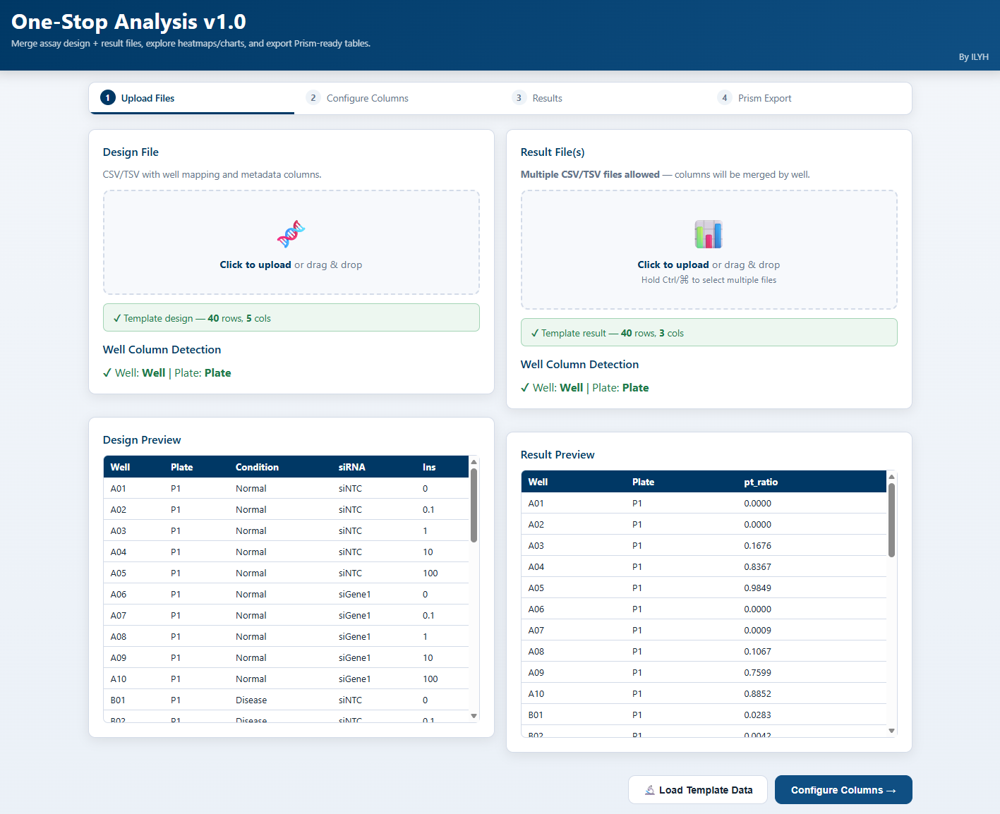
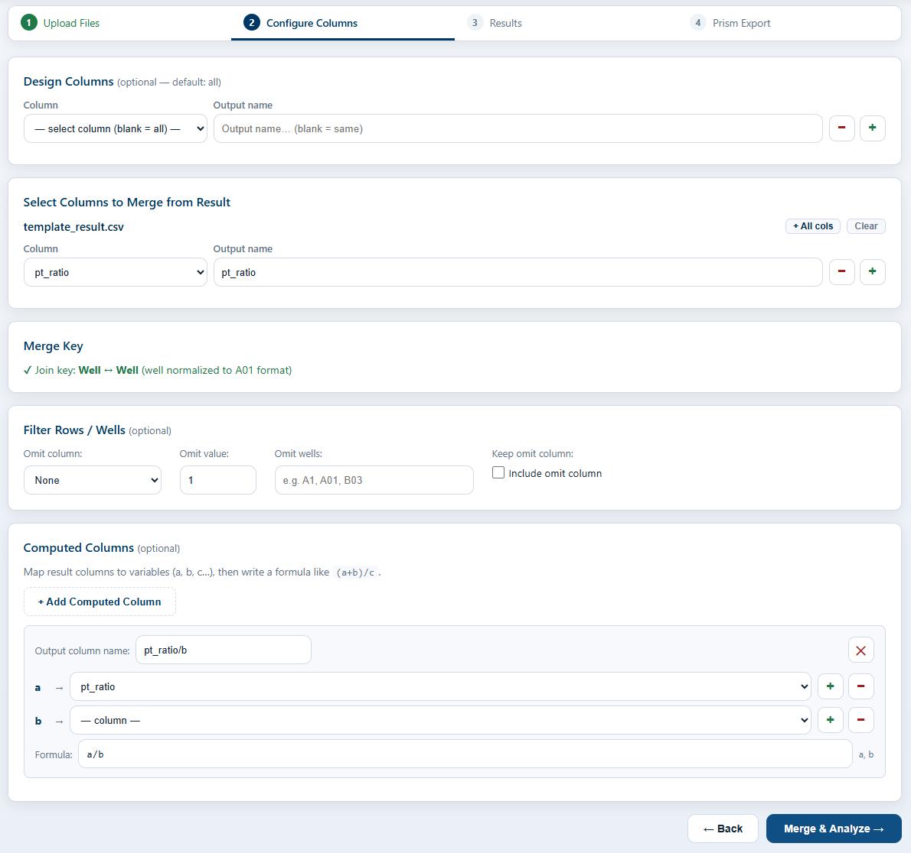
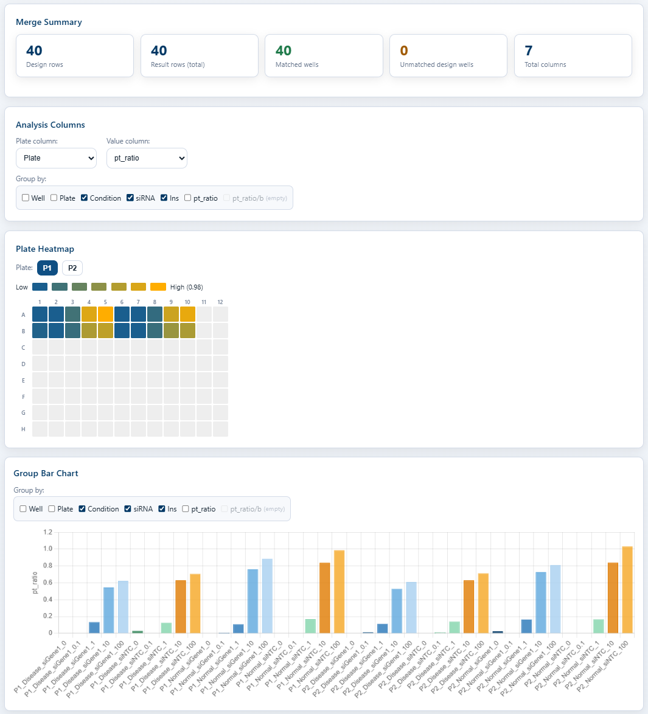
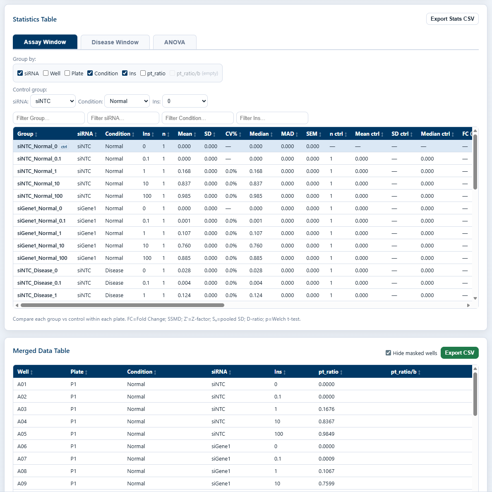
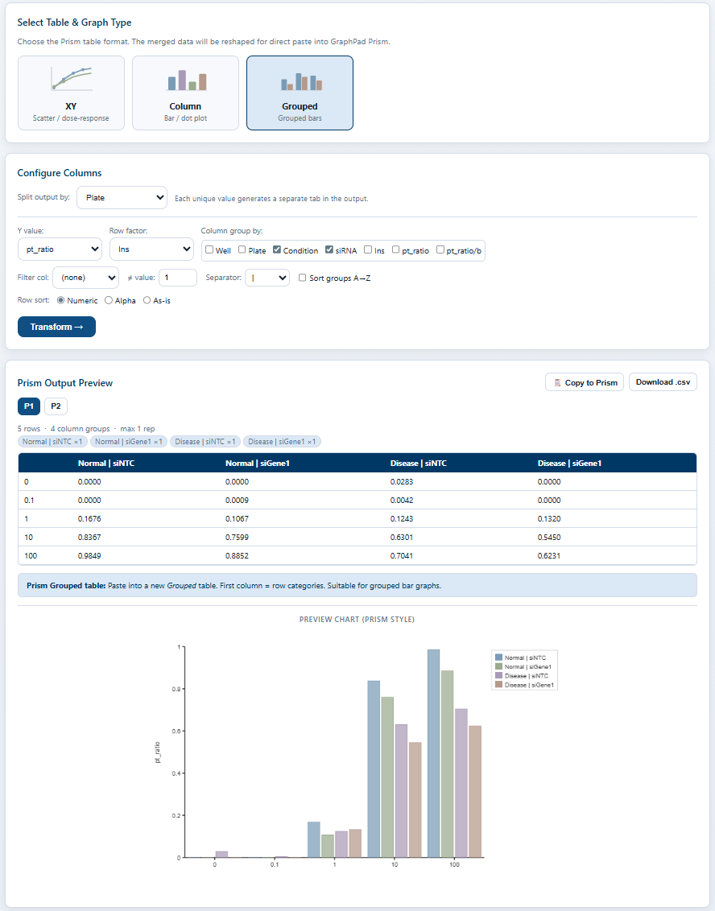

What it does
- Merges plate-design files with assay results by well/plate ID into a single normalized table.
- Performs Two-Way ANOVA with post-hoc tests, auto-flagging outliers and missing groups.
- Exports Prism-formatted TSV with replicate structure intact for error-bar regeneration.
How it works
Upload design & result files
Drag a plate-design file (well → group / treatment) together with one or more assay result files; the tool merges them by well or plate ID into a single long table.
Configure groups & comparisons
Map columns to roles, choose normalization, define which factors and reference groups to compare — all before any stats are computed.
Review charts & statistics
Overview chart, Two-Way ANOVA, post-hoc tests and descriptive stats; significance markers, outliers and missing groups are flagged automatically.
Export to Prism
Download Prism-formatted TSV blocks alongside the merged table and stats summary; replicate structure preserved.
What it looks like
One drop, every plate joined
Drag a plate-design file together with raw assay results from any reader. Wells, plates and replicates are joined into a single long table — no manual VLOOKUP, no copy-paste between sheets.

Configure groups before you run
Assign columns to group, replicate and response roles; choose normalization and reference levels; pick which factors to compare. Every choice is previewed live so the analysis matches the experiment, not the other way around.

The whole experiment, one figure
An overview chart lays out every group side by side — replicate dots, group means and error bars — so trends, dose responses and outliers stand out at first glance, before drilling into per-target plots.

Statistics without leaving the page
Two-Way ANOVA with post-hoc tests, descriptive statistics and significance markers, all rendered next to the data. Outliers, unbalanced groups and missing wells are flagged automatically — no R, no scripts, no copy-paste into a second tool.

Paste straight into Prism
One-click export to GraphPad Prism Grouped table layout, plus the merged table and stats summary as TSV. Replicate structure is preserved so error bars and post-hoc significance regenerate correctly inside Prism — no reformatting required.
